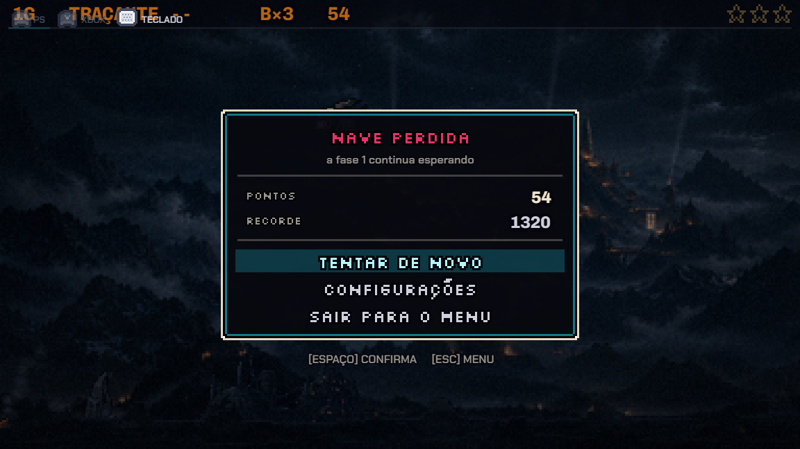
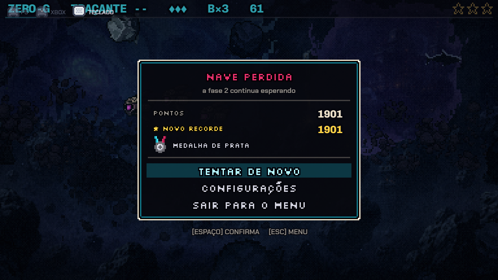
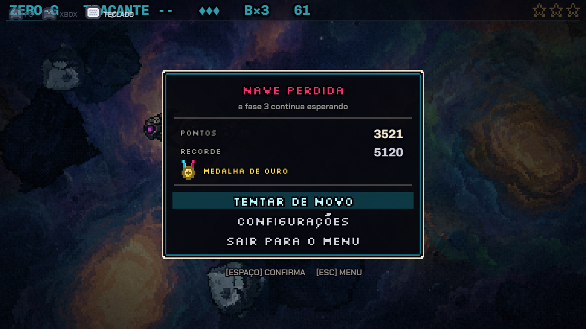
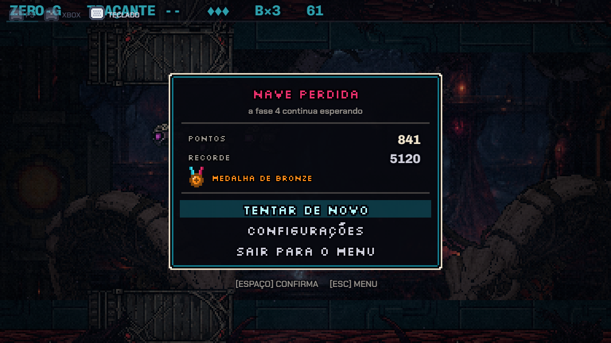
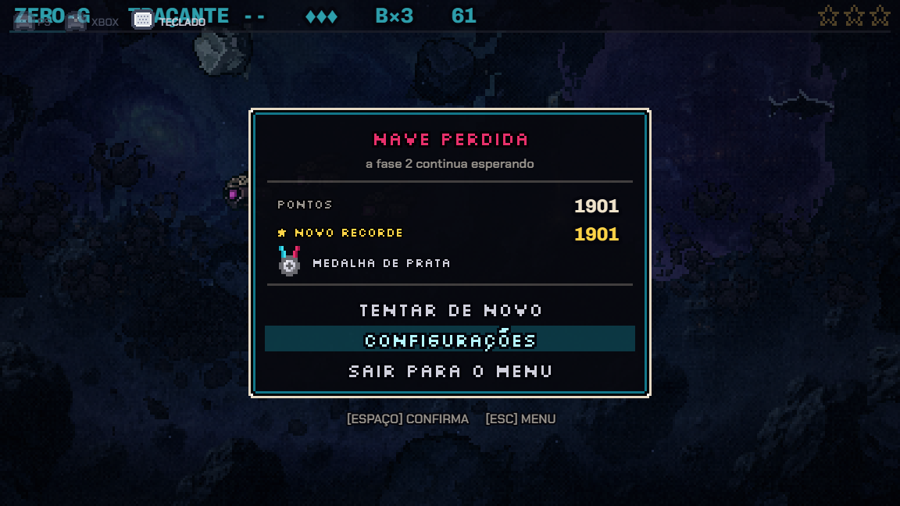
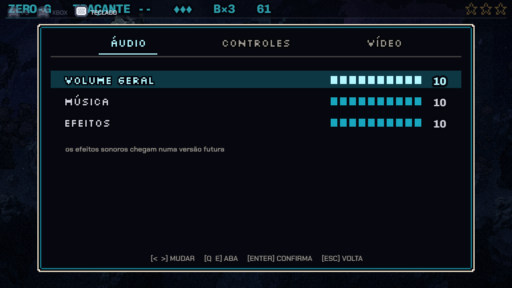
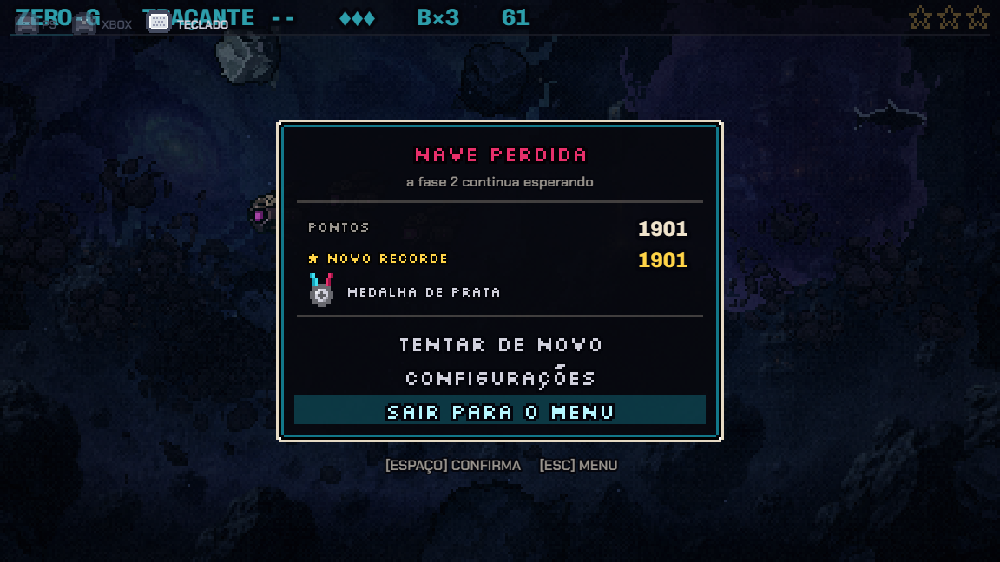
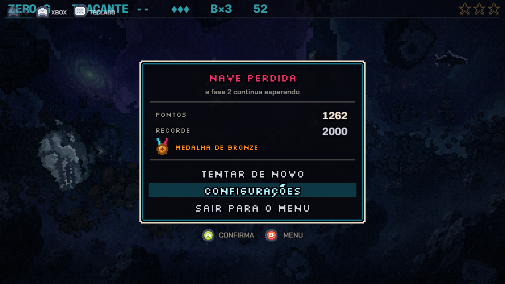
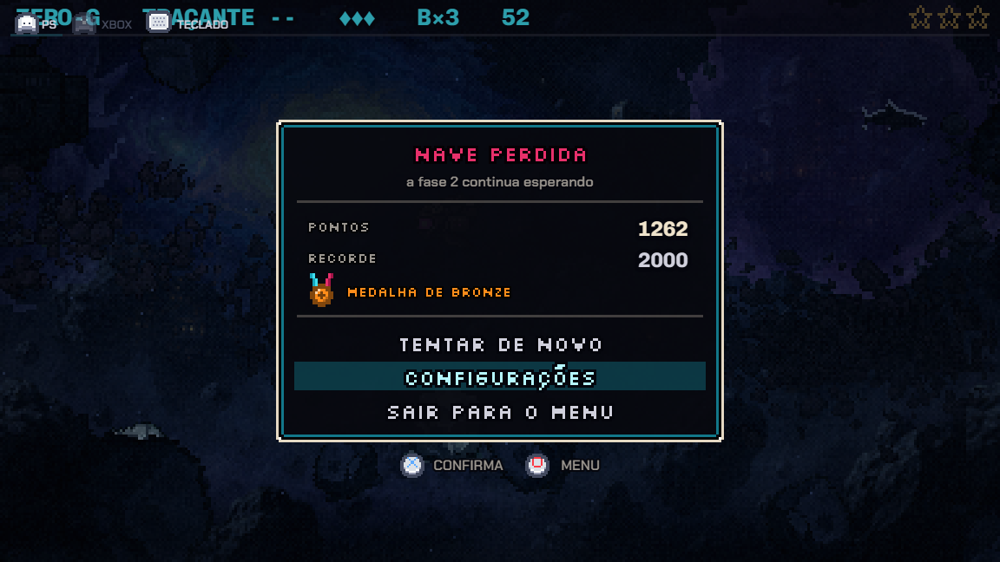
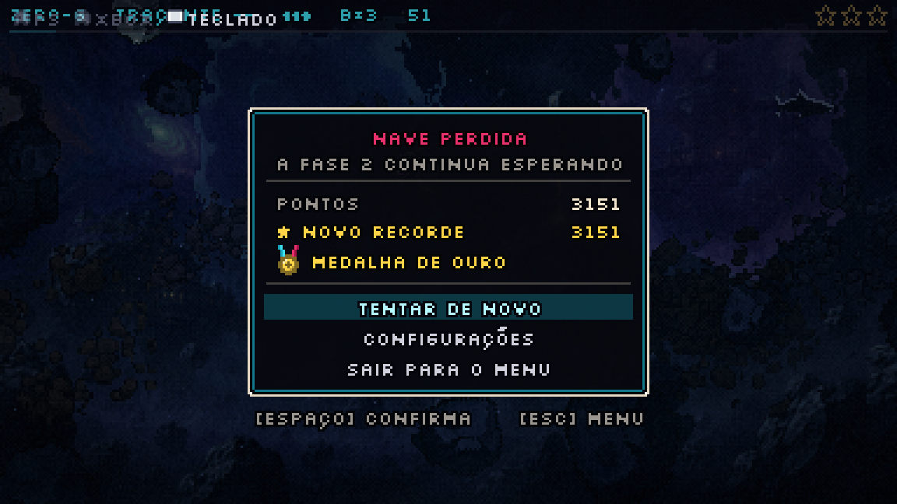

Fotos tiradas do jogo em 15/11. Para jogar: perca a nave em qualquer fase. A "FASE COMPLETA" do treino de dev ficou como estava.
A morte da nave corre inteira; quando termina, a fase para no último quadro, escurece e a janela entra. Os pontos e o recorde já parados; a medalha só quando há uma.




O cursor nasce em TENTAR DE NOVO: um toque no tiro recomeça a fase. Nenhuma linha pede confirmação; o ESC vai direto ao menu.



Embaixo da janela: a tecla de tiro e o ESC no teclado, os botões no controle.


O modo de reserva (?semhd): tudo legível, na fonte de pixel.
